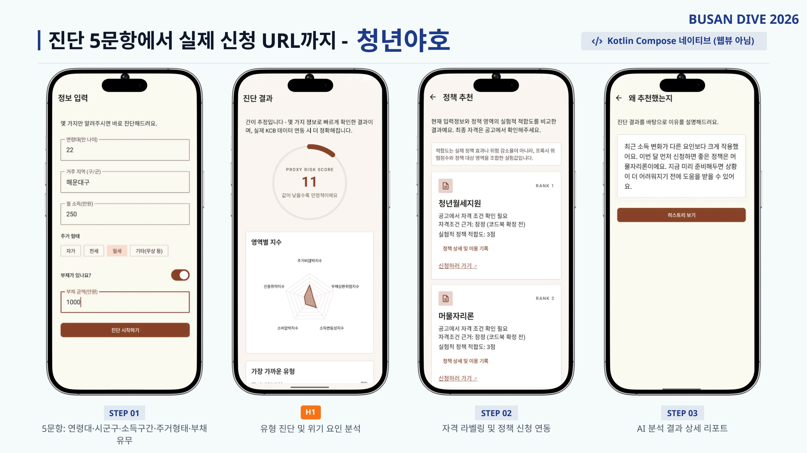
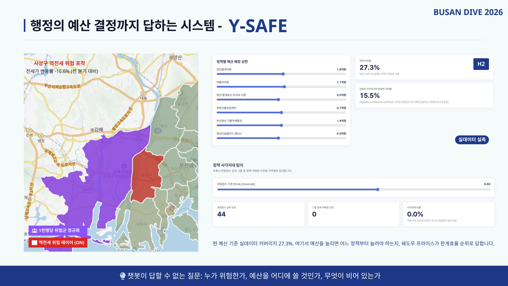
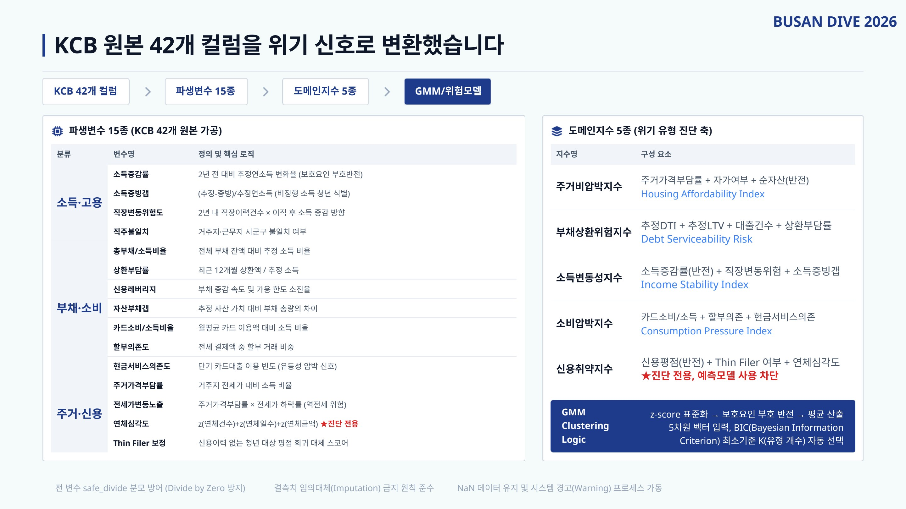
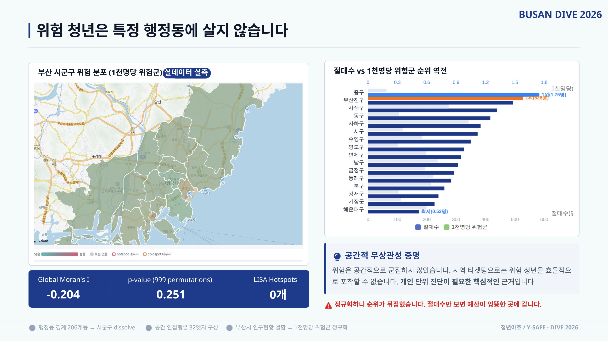
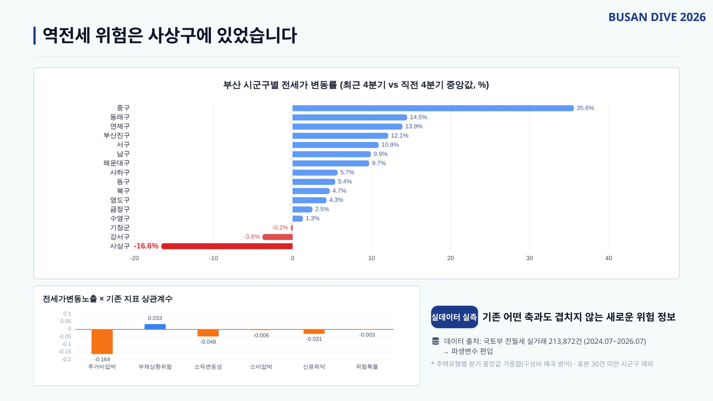

Y-SAFE (청년야호) — 청년 경제위험 진단 · 정책 매칭
🏆 AI 특별상 · 발제사별 3등상"누가 위험하고, 누구에게 먼저 예산을 써야 하는가" — 연체 발생 전 선행 신호로 청년 경제위기를 조기 포착하고, 예산 제약 하의 최적 배정까지 답하는 시민 앱(청년야호) + 행정 대시보드(Y-SAFE).
ML · 데이터 기여
- KCB 원본 42개 컬럼 → 파생변수 15종 → 도메인지수 5종(주거비압박·부채상환위험·소득변동성·소비압박·신용취약)으로 변환하는 피처 엔지니어링 설계
- GMM 소프트 클러스터링(BIC 기준 K 자동 선택)으로 위기 유형 진단, LightGBM + SHAP으로 위험 확률 산출 — held-out PR-AUC 0.9032 실측
- 리허설 중 비정상 고성능을 데이터 누수(Leakage)로 의심 → 신용취약지수를 통한 연체심각도 우회 유입 경로를 규명하고 예측 피처에서 프로그램적(assert) 차단
- LP/MIP 수리최적화로 예산 제약 하 정책 배정, 쉐도우 프라이스로 정책별 한계효율 순위 산출 · 예산 스윕 민감도 분석
- Global Moran's I 검정(999회 순열)으로 위험의 공간 무상관성을 증명해 "지역 타겟팅이 아닌 개인 단위 진단" 근거 도출, Equalized-Odds 공정성 보정 실적용
- 온통청년 Open API 실연동, 테스트 445건 통과 — Kotlin Compose 앱 + React 대시보드 + FastAPI, 실동작 제품 3종 완성


설치 시 출처 확인 안내가 표시될 수 있습니다
직접 사용해볼 수 있습니다
프로젝트 자세히 보기
문제 정의
부산 청년 1인가구는 약 20만 가구, 청년 평균 부채는 2,465만 원. 주거비 부담 → 대출 의존 → 상환 부담 → 연체로 이어지는 악순환에서 연체가 발생한 뒤에는 이미 늦습니다. 기존 플랫폼에 AI 정책 추천은 있었지만, 위기 선제 포착과 예산 최적 배정 기능은 부재했습니다.
접근 — 챗봇이 아니라 선제 계산
문의자에게만 반응하는 Pull형 챗봇 대신 인구 전체를 선제 계산하는 Push형 시스템을 설계했습니다. "나에게 맞는 정책이 있나요?"가 아니라 "누가 위험하고, 누구에게 먼저인가"에 답하고, 매칭 실패 케이스는 버리지 않고 미충족 수요 데이터로 축적해 신규 정책 제안 근거로 환류합니다.
피처 엔지니어링 · 모델
원본 42개 컬럼을 파생변수 15종으로 가공해 주거비압박·부채상환위험·소득변동성·소비압박·신용취약의 5종 도메인지수로 압축했습니다. GMM 소프트 클러스터링(BIC 기준 K 자동 선택)으로 위기 유형을 진단하고 LightGBM + SHAP으로 위험 확률과 요인 설명을 산출합니다. 신용이력 없는 Thin Filer는 별도 보정 서브모델로 처리하고, 결측치 임의대체 금지·safe_divide 등 데이터 원칙을 코드로 강제했습니다.
트러블슈팅 — 성능을 의심하는 장치
리허설 중 위험모델 성능이 비정상적으로 높게 나오자 데이터 누수를 의심했습니다. 연체 변수를 직접 넣지 않았는데도 신용취약지수를 통해 연체심각도가 우회 유입되는 경로를 규명했고, 진단(클러스터링)에는 허용하되 예측 피처에서는 assert로 차단하는 완전 분리 설계를 적용했습니다.
공간분석 · 검증
Global Moran's I(999회 순열검정)로 위험이 공간적으로 군집하지 않음을 확인해 "지역 타겟팅이 아닌 개인 단위 진단"의 근거를 세웠고, 절대수 대신 1천명당 정규화 시 위험 순위가 역전됨을 보였습니다. 국토부 전월세 실거래 213,872건으로 역전세 위험 파생변수를 구축해 사상구의 전세가 -16.6% 하락 위험을 포착했으며, 성별·연령대 그룹에 Equalized-Odds 임계값 보정을 실제 적용했습니다.



한계와 로드맵
위험점수는 단일 시점 프록시 점수임을 전제로 명시했고, 패널데이터 확보 시 Cox 생존분석으로 교체되도록 코드를 미리 구현해 두었습니다.